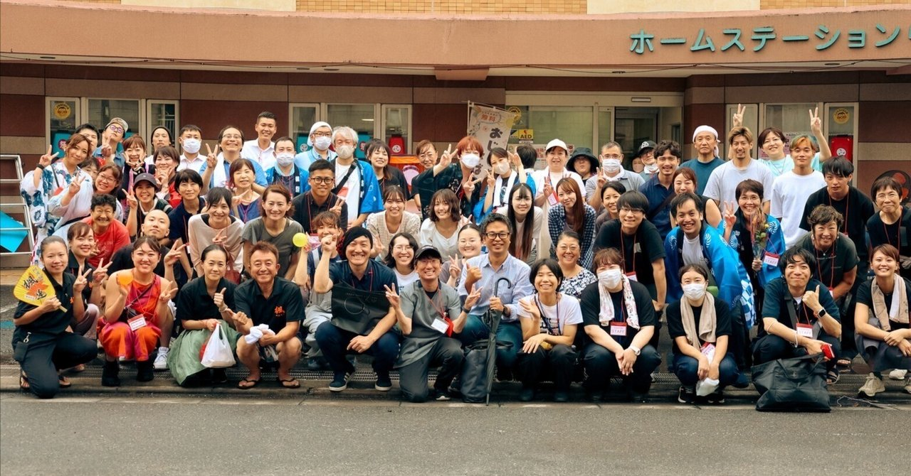

現場のスタッフは、日々どんなことを考えているのか。公式noteの取材記事からご紹介します。
本多病院では、公式noteで現場の話を発信しています。
ここでは、その一部をご紹介します。
病院では「退院」という言葉をよく使います。治療を終えて、病院を出る。けれど看護師の話を聞いていると、どうもそれだけではなさそうです。
病棟では、患者さんの状態やこれからの見通しだけでなく、どこへ退院するのかについても、多職種で話し合っています。
ある患者さんが元気になって退院するとき、
「具合が悪くなったら、またお願いね」
と言ってくださったそうです。
病院は、できれば来なくても済むほうがいい場所なのかもしれません。それでも、「またお願いね」と言ってもらえる。そこには、どんな関係があるのでしょう。
本多病院では、在宅診療や同じ法人の老健とも連携しながら、退院後の医療や生活を支えています。「退院」は支援の終わりではなく、その人の暮らしに戻っていく一つの節目なのかもしれません。
本多病院では2025年4月に訪問診療が始まりました。外来や入院だけでなく自宅でも患者さんと関わることで、病院の中では見えなかった暮らしが見えるようになったと、在宅スタッフは話します。
家では、どんなふうに過ごしているのか。誰と暮らしているのか。何を大切にしているのか。訪問診療では、病気だけではなく、その人の生活そのものに触れることになります。
ある患者さんが、訪問診療のときに医師と一緒に撮った写真。
その一枚が、のちにその方の遺影になったそうです。
何気なく撮った一枚が、ご本人やご家族にとって大切な写真になっていた。そんな話を聞くと、在宅医療は、単に「病院の診療を家ですること」とは少し違うように感じます。
自宅での生活の主役は、患者さん自身です。「どう過ごしたいのか」「何を大切にしたいのか」。その思いを聞きながら、一緒に考えていく。在宅スタッフも、患者さんやご家族から「やりたいこと」を話してもらい、それを一緒に考える時間にやりがいを感じると話しています。
地域包括ケア病棟、訪問診療、地域連携、多職種協働の取り組みや職員インタビューを発信しています。更新を続けていますので、ぜひご覧ください。